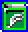
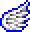
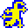
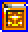
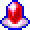
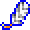

Harmony of Dissonance

Harmony of Dissonance
Castlevania: Harmony of Dissonance é um jogo de ação e exploração lançado em 2002 para o Game Boy Advance. No papel de Juste Belmont, neto do lendário caçador de vampiros Simon Belmont, os jogadores exploram um misterioso castelo para resgatar sua amiga Lydie. O jogo se destaca por seus gráficos vibrantes e coloridos, além de sua trilha sonora atmosférica. Harmony of Dissonance mantém o estilo "Metroidvania" característico da série, oferecendo um vasto mapa para explorar, itens poderosos para coletar e inimigos desafiadores para enfrentar. É um título essencial para os fãs da série e do gênero.
Magias Presentes No Jogo
| IMG | NOME | MAGIA |
|---|---|---|
|  | Livro da fada | Revela o nome de inimigos |
|  | Asa angelical | Permite planar |
|  | Cauda de lagarto | Permite grudar-se em paredes |
|  | Bestiário | Registra os nomes de chefes |
|  | O ruby | Diminui o dano recebido |
|  | Pena de seraphim | Permite pular mais alto |